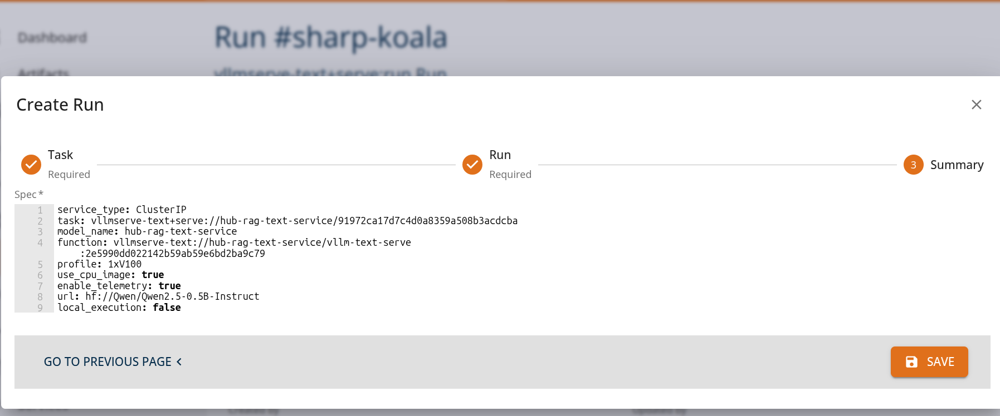
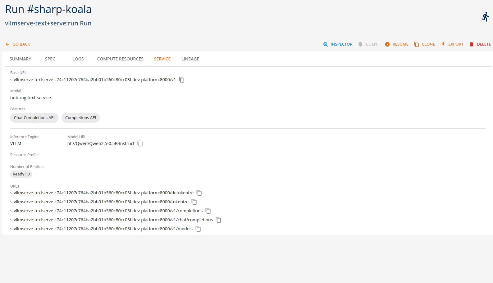
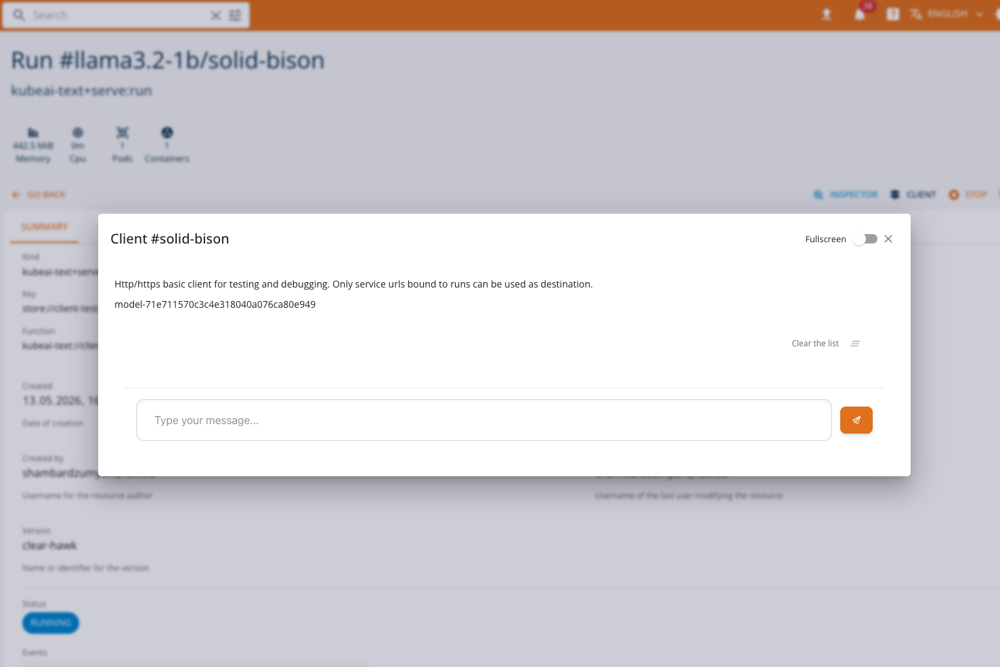
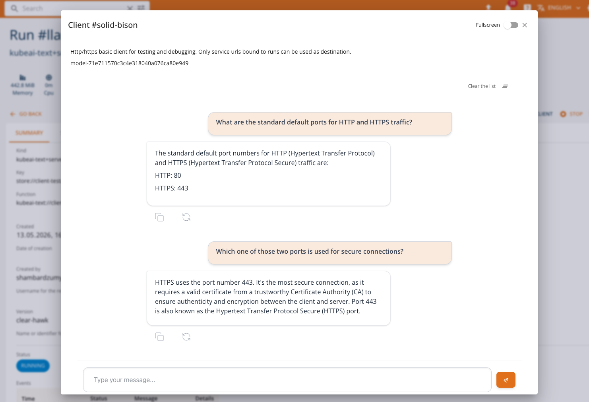
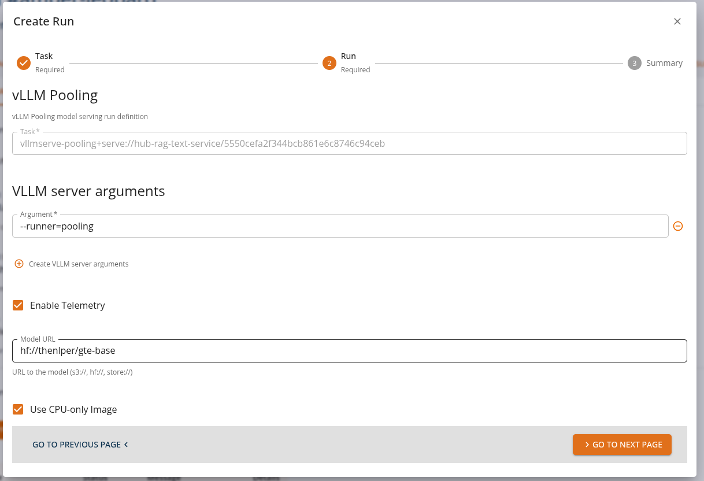
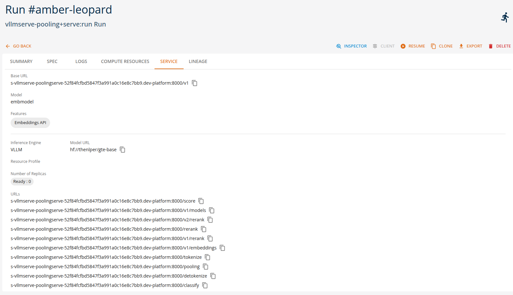
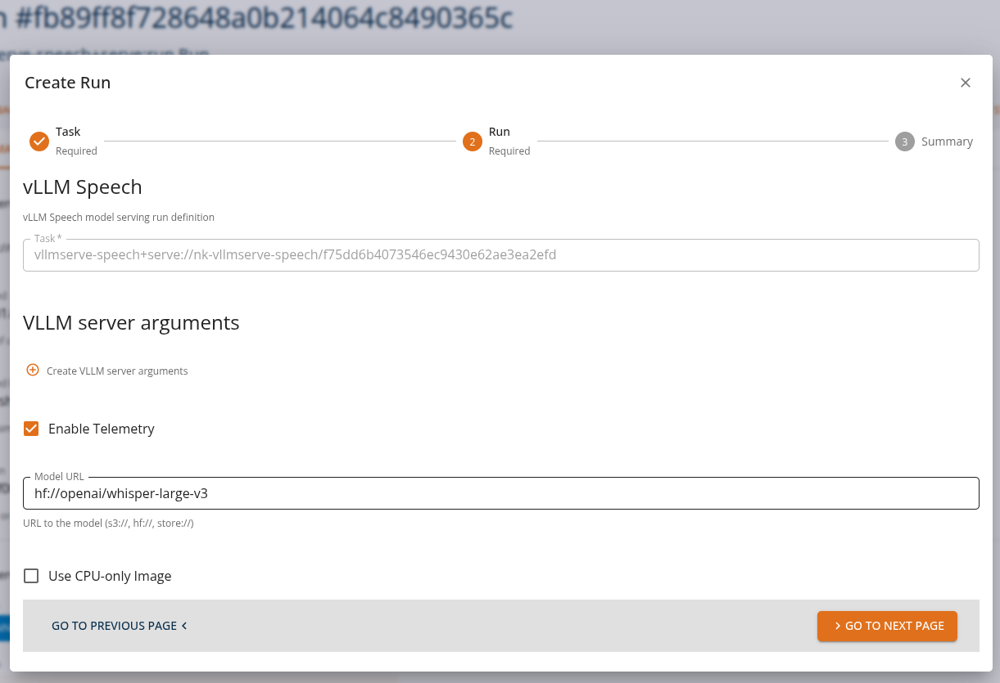

Serving Generative Models
Serving generative models means exposing trained models through APIs so that applications can send requests and receive generated outputs in real time. Once deployed, the runtime environment manages inference requests, routing, preprocessing, and response generation.
On the platform, these interactions are performed, where possible, through OpenAI-compatible APIs, allowing applications and tools to interact with deployed models using standard OpenAI protocols. This enables easy integration of generative AI capabilities into applications, automation pipelines, and development tools without requiring custom APIs. By combining these serving options with OpenAI-compatible APIs, the DigitalHub platform enables users to quickly deploy and operate generative AI models without implementing custom inference services. Using the available runtimes, users can configure and deploy models directly through the platform by specifying only a small set of parameters such as the model model name, runtime type, and optional adapters or runtime arguments.
This approach enables no-code or low-code model deployment, where the platform automatically handles the underlying infrastructure required to run the model, including container configuration, API exposure, and runtime orchestration.
Different runtimes support different types of generative workloads. Specifically, we distinguish between
- Text Generation Tasks
- Embedding and Vector Tasks
- Speech Processing Tasks
The following examples illustrate typical runtime tasks that can be executed on the platform using either the platform SDK or the core console UI as indicated below.
Text Generation Tasks
Text generation tasks, such as completion and chat generation, may be performed either through the vllmserve-text runtime or with the kubeai-text runtime.
The vllmserve-text runtime is commonly used for text generation and conversational workloads. Through the OpenAI-compatible APIs available in the DigitalHub platform, applications can send prompts or chat messages and receive generated responses. VLLM runtime can be configured in the same way the vLLM engine, it allows for integrating multiple LoRA adapters, etc.
The kubeai-text runtime is a more advanced alternative that allows for serving multiple models or adapters and auto-scaling, allowing for using both vLLM and OLLama engines for different types of scenarios. For example, OLLama is more appropriate for CPU-only workloads, while vLLM is more suitable for GPU workloads and is more flexible for production-oriented tasks.
Example of vllmserve-textruntime tasks
Chat assistants
Applications send chat completion requests to generate conversational responses.
Example:
- A chatbot sends a user prompt asking for help writing an email.
- The request is sent to the model using the OpenAI chat completions API.
- The generated response is streamed back to the client application.
From the Core Manage UI, users can create a chat assistant API task of kind 'vllmserve-text+serve:run' as shown.


Users can view the API endpoints for their deployed services in the 'services' tab.

Chat Client
The Chat Client is a built-in interactive interface for communicating with LLM (Large Language Model) services deployed on the platform. It provides an OpenAI-compatible chat experience directly from the console, enabling users to test and interact with their served language models without external tools.
The Chat Client is available for services deployed through LLM-serving runtimes (e.g., HuggingFace Serve, KubeAI Text) that expose an OpenAI-compatible API. It is automatically selected when the service run status indicates OpenAI compatibility and supports one of the following features: TextGeneration, Chat Completions API, or Completions API.
Accessing the Chat Client
When a service run is in a RUNNING state and exposes an OpenAI-compatible endpoint, the CLIENT button becomes available on the service list or run detail page. Clicking the button opens a dialog with the Chat Client.

If the service does not support chat features, the console will fall back to the standard HTTP Client or the InferenceV2 Client, depending on the service type.
Features
The Chat Client provides the following capabilities:
- Streaming responses: Messages are streamed in real time as the model generates its response, providing immediate feedback.
- Conversation history: The full conversation context is sent with each request, allowing the model to maintain context across multiple exchanges.
- Persistent sessions: Conversation history is persisted in the browser, so you can close and reopen the dialog without losing your conversation.
- Stop generation: An in-progress response can be stopped at any time by clicking the stop button.
- Regenerate responses: You can regenerate the last model response to get a different answer.
- Clear conversation: Use the clear button in the toolbar to reset the entire conversation history.
- Copy responses: Model responses can be copied to the clipboard with a single click.
- Error handling: If the model returns an error during streaming, the partial response is preserved along with the error message.
- Full-screen mode: Toggle full-screen mode for a more immersive chat experience.
How It Works
The Chat Client connects to the deployed model's OpenAI-compatible endpoint using the service URL and model name provided in the run status. All requests are proxied through the platform backend — the model endpoint is not directly exposed to the user's browser.
Under the hood, the client uses the OpenAI SDK to call the Chat Completions API with streaming enabled:
POST {baseUrl}/chat/completions
Content-Type: application/json
{
"model": "<model-name>",
"messages": [
{ "role": "user", "content": "Hello!" },
{ "role": "assistant", "content": "Hi there! How can I help?" },
{ "role": "user", "content": "Tell me about machine learning." }
],
"stream": true
}
The full conversation history is included in each request so the model has full context of the exchange.
Usage
- Deploy an LLM model using one of the supported serving runtimes (e.g., HuggingFace Serve or KubeAI Text). See Model Serving: LLMs for details.
- Wait for the service to reach the RUNNING state.
- Click the CLIENT button in the service list or run detail page.
- The Chat Client dialog opens with the model name displayed at the top.
- Type your message in the input field and press Enter or click Send.
- The model's response will stream in real time.

Notes
- The Chat Client is only available when the model exposes an OpenAI-compatible chat API. Models serving other protocols (e.g., Open Inference Protocol) will use the InferenceV2 Client or the standard HTTP Client.
- All communication is mediated by the platform backend. The model's service URL is internal to the cluster and not accessible from outside the platform.
- Conversation history is stored locally in the browser and is not shared across users or devices.
Embedding and Vector Tasks
Frequently genAI applications require supporting tasks, such as embedding, ranking, scoring, and encoding. They are required, for example, for generating vector embeddings used in search, recommendation systems, and semantic analysis. In the platform these tasks may be implemented using the vllmserve-pooling runtime or the kubeai-text runtime (only for embedding).
Example of vllmserve-pooling runtime tasks
Semantic search
Applications convert queries and documents into embeddings to perform similarity searches.
Example:
- A user searches for documents related to a specific topic.
- The runtime generates an embedding vector for the query.
- The search engine compares it with stored document embeddings.
From the Core Manage UI, users can create a chat assistant API task of kind 'vllmserve-pooling+serve:run' as shown.

Users can view the API endpoints for their deployed services in the 'services' tab.

Example of kubeai-text runtime tasks
Text embedding with KubeAI
Applications convert text into vector embeddings for semantic search and similarity analysis.
Example:
- A document management system needs to index and search documents.
- The runtime generates embedding vectors for documents and queries.
- Similarity comparisons identify relevant documents.
From the Core Manage UI, users can create a text embedding API task of kind 'kubeai-text+serve:run' and the services will be avaliable as shown below.

Audio Processing Tasks
Audio processing tasks, such as speech recognition and translation, may be performed through the vllmserve-speech runtime or with the kubeai-speech runtime.
The vllmserve-speech runtime supports audio-based AI tasks such as speech recognition and translation. These capabilities are also accessible through OpenAI-compatible audio APIs exposed by the platform.
Example vllmserve-speech runtime tasks
Speech transcription
Audio recordings are processed and converted into text.
Example:
- A meeting recording is uploaded through the audio transcription API.
- The runtime invokes the speech model.
- The generated transcript is returned to the client.
From the Core Manage UI, users can create a chat assistant API task of kind 'vllmserve-speech+serve:run' as shown.

Users can view the API endpoints for their deployed services in the 'services' tab.

Summary
On the DigitalHub platform, generative models can be served using multiple runtimes while maintaining a consistent OpenAI-compatible API interface. This enables applications to perform a variety of AI tasks—such as text generation, speech processing, and embedding creation—without changing the client-side integration.
| Runtime | Example Tasks | Console Client |
|---|---|---|
| vllmserve-text | chat generation, text completion, code generation | Chat Client |
| kubeai-text | multi-model serving, adapter routing, autoscaling, text embedding | Chat Client |
| vllmserve-pooling | embeddings, semantic search, recommendations | — |
| vllmserve-speech | speech transcription, audio translation | — |
| kubeai-speech | speech transcription | — |
Note: Refer to the Tutorial section for more detailed usage and examples.